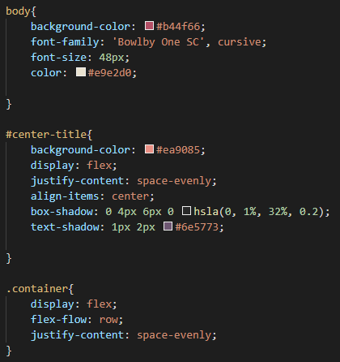

Each dom object has a type and also a set of attributes. One of these is the style attribute.
What is the DOM?
The DOM (Document Object Model) is a tree-like representation of a web-page. As this name
suggests, it is object oriented. It serves as an interface for programming and manipulating
HTML (and XML)
The DOM (Document Object Model) is a tree-like representation of a web-page. As this name
suggests, it is object oriented. It serves as an interface for programming and manipulating
HTML (and XML)
 Example of a DOM tree
Example of a DOM tree
CSS (Cascading Style Sheets) is all about using this style attribute to make things pretty.
Put otherwise, it is a language used to define how to render elements in HTML.
Put otherwise, it is a language used to define how to render elements in HTML.
- It allows us to set the styling properties of individual/groups of elements
- The basic building block of CSS is a "CSS declaration"
Format and examples of some CSS declarations
To group CSS declarations we use blocks of declarations
- The block starts with a left curly bracket '{' and ends with a right curly bracket '}'
- Each individual declaration is separated by a semicolon
Example of a block of declarations in CSS
CSS Rulesets are used to apply a block of declarations to an element/group of elements
These are also sometimes called 'CSS Selectors'
These are also sometimes called 'CSS Selectors'
Generic format for a CSS ruleset
And that's it! A CSS file is just a list of these rulesets!

The CSS for this website!
The CSS for this website!
Now, there are different kinds of CSS, and any combination of them can be used at once.
Inline CSS is specified using the 'style' attribute of an HTML element.
- This can include one or more declarations, separated by semicolons
- No curly brackets or selectors are needed, declarations only apply to one element
- If multiple sheets are used, inline styling is given the highest priority
- Not recommended for manual HTML creation
- Useful for automated HTML creation though!
Example of inline CSS Styling
Embedded CSS sheets are used within the HTML file still, but use the <'style'> tag.
- Full CSS syntax, multiple rules, selectors, etc.
- If used with multiple sheets, has the 2nd highest priority (behind inline)
- Can have multiple embedded CSS sheets within a single document
- Recommended only for experimentation. Once you know what you want, you should migrate to external CSS
Example of embedded CSS Styling
External CSS sheets are saved as separate files, and loaded (included) into HTML via <'link'>
tags.
tags.
- External CSS supports full CSS syntax, multiple rules, selectors, etc.
- File extension is '.css' by convention
- 3rd highest priority if used in conjunction with other kinds of CSS stylesheets
- Recommended for just about every scenario
Example of external CSS styling
One stylesheet can import another (guess what we call these: Imported Stylesheets!)
- This allows for more modular design
- But isn't very useful for smaller sites
The rules in the imported sheet 'master.css' would have the lowest priority of all
CSS Units
Relative:
Relative:
- 'em' is relative to the font size of the current element
- eg. 3em = three times as big as font size
- 'rem' is relative to the font size of the root element/li>
- '%' depends on the attribute, but it's usually the size of the viewport
- eg. 'width:100%' means the entire width of the display
- 'px' = pixel size
- 'in' = inches
- 'cm,mm' = centimeters, millimeters
- 'pt,pc' = points (these are fractions of inches)
Can't forget about the box model!
Every HTML element has this. It's called the box model, and this is about the most ubiquitous visual for teaching it.